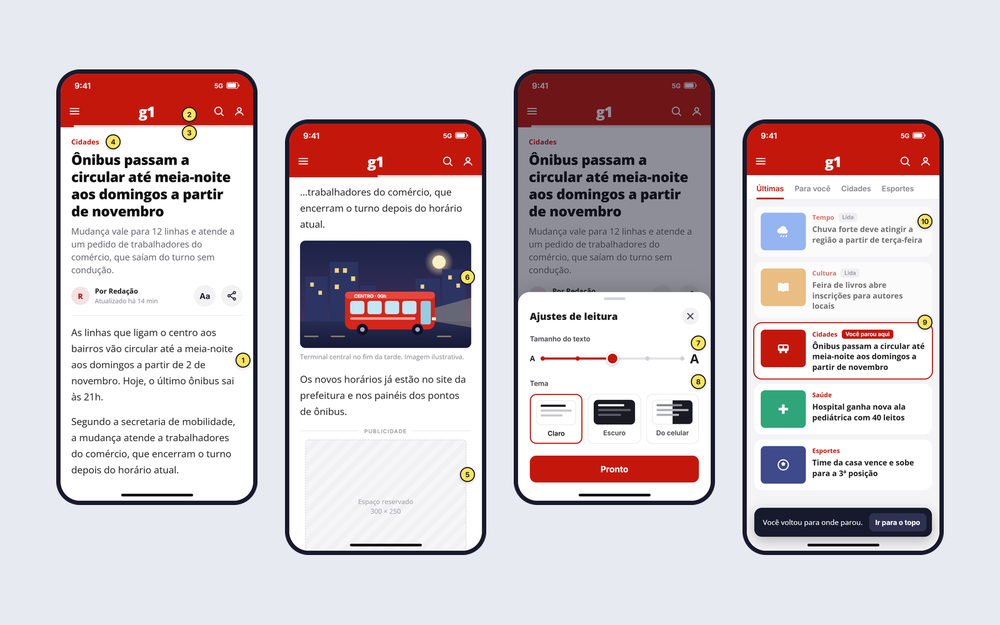
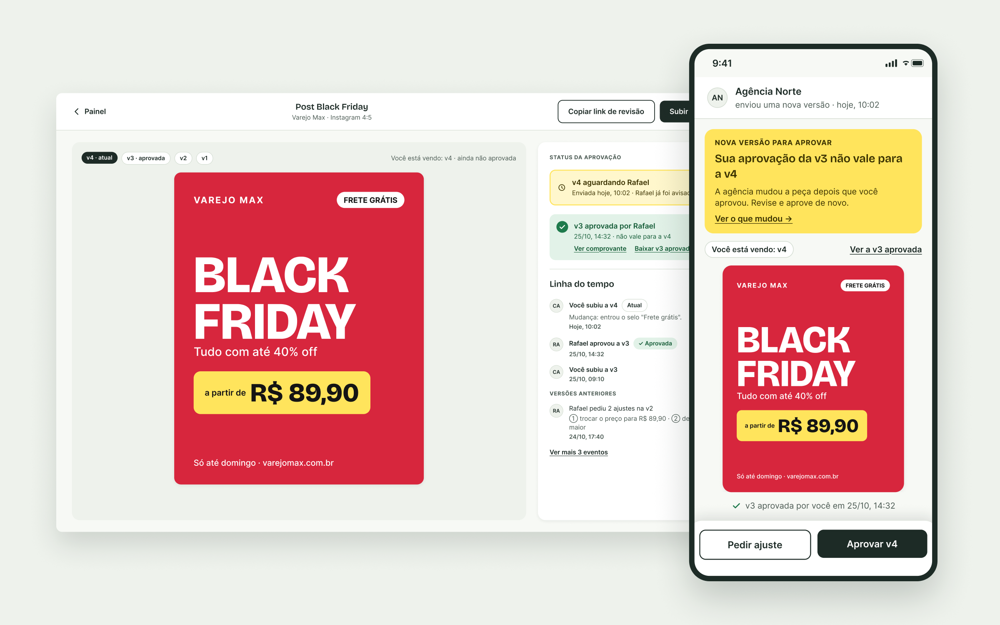
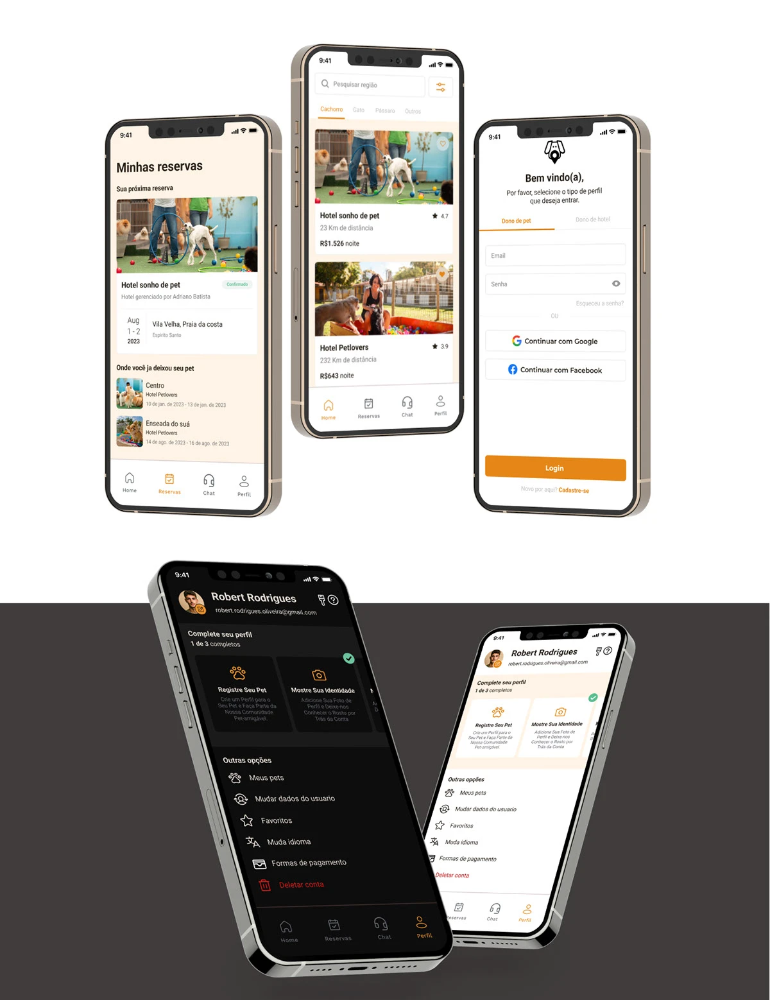
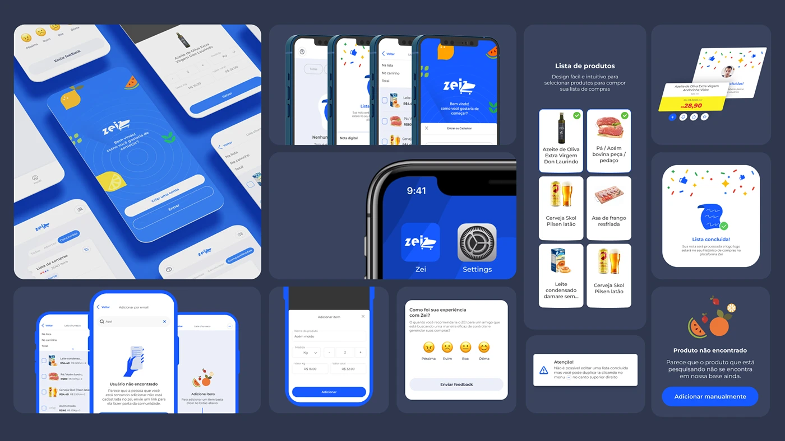

Trabalhos selecionados
Em cada case mostro o que era hipótese, o que a pesquisa mostrou e por que tomei cada decisão.

Estudo independente, 2026
g1: ler a notícia até o fim
Medi o site, analisei 819 avaliações de leitores e descobri que o problema não é a quantidade de anúncios, e sim o que eles fazem. Redesenhei a leitura a partir disso.

Projeto conceito, 2026
Aprova
Um teste com 5 pessoas mostrou que avisar que a peça mudou não basta: 4 de 5 não sabiam se a aprovação antiga ainda valia.
Ler o case
Hotel para Pet
Uma pesquisa com 41 donos de pet mostrou que o problema não era achar um hotel, e sim confiar nele.
Ler o case
Revisão de um projeto de 2024
Zei
Revisitei um app de lista de compras com dados públicos e análise de concorrentes, e propus cortar o escopo de 13 para 3 funcionalidades.
Ler o casePlayground
Trabalhos de motion, interação e design gráfico. Não são cases de produto, mas mostram o que eu levo para eles.
Sobre
Sou formada em Design Gráfico pela FAESA e trabalho como diretora de arte e UI designer numa agência de publicidade, onde crio campanhas e participo da criação de landing pages e sites. Antes, estagiei em direção de arte na Artmark.
Foi no trabalho digital que me encontrei, e em 2024 concluí a certificação Google UX Design para levar isso a sério.
Uso o Claude, a IA da Anthropic, no meu processo: para automatizar medições, coletar dados de pesquisa e ganhar tempo na produção. A IA cuida da parte braçal, e eu fico com as perguntas, a análise e as decisões.
- Hoje
- Diretora de arte e UI designer
- Formação
- Design Gráfico, FAESA
Google UX Design - Ferramentas
- Figma, Claude, Photoshop, Illustrator, After Effects